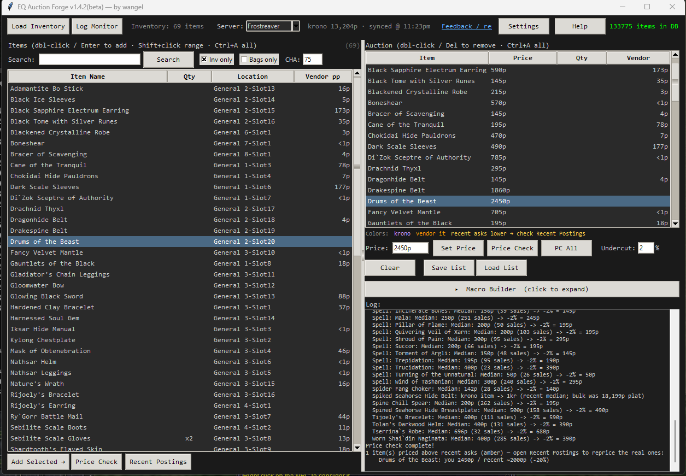
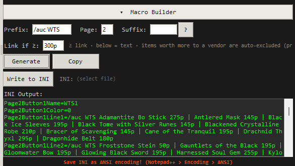
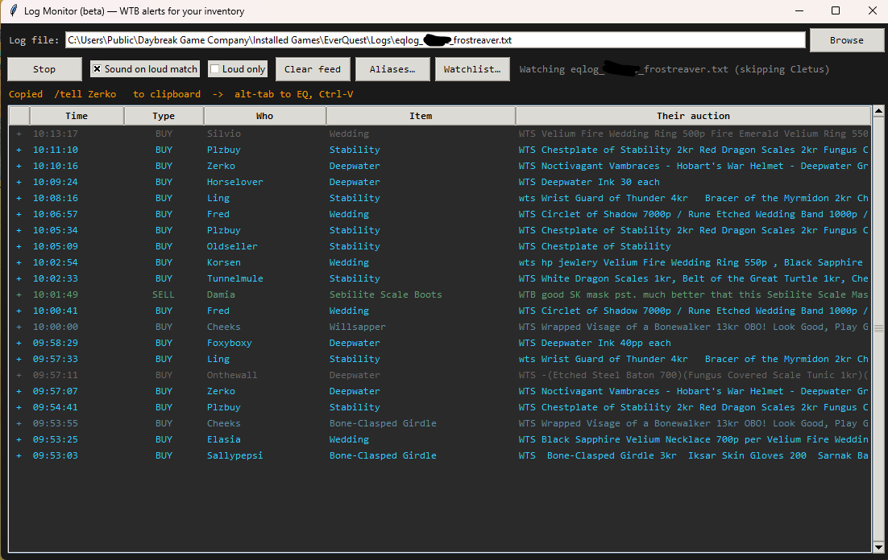
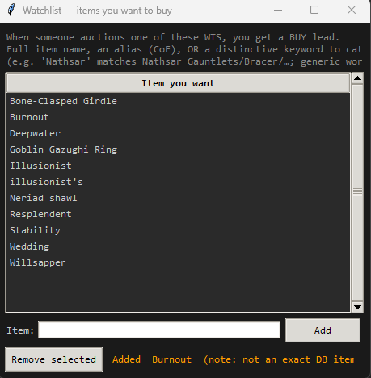
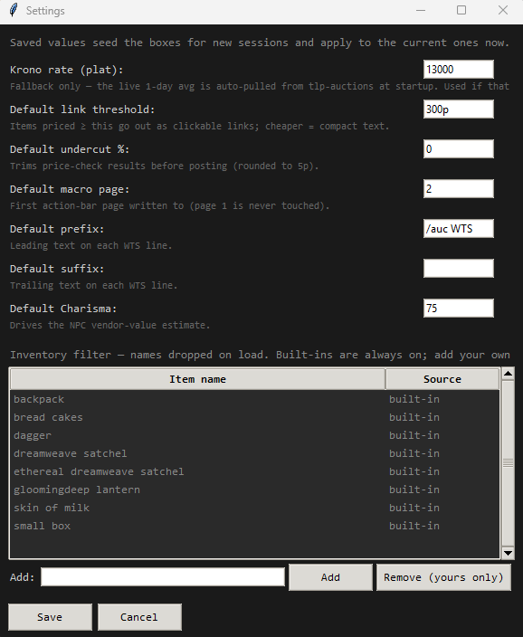
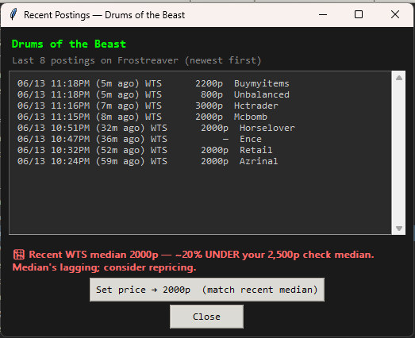

I got tired of hand-typing WTS macros in the tunnel, so I made this. Load your bags, pull prices, get a macro full of real clickable links. Done.
free, open source, one python file. no installer, no nonsense.
/outputfile inventory and load the dump it spits out.1.4.3 — bug fix. Some items in the DB share a name (there's a newbie Mistmoore Battle Drums and a raid one, an Apothic Robe that's really two items, ~5,400 names total). It used to match by name and could link the wrong one in game. Now it matches by the item ID from your inventory dump, so the link is always the exact item you're holding. The 1.4.2 feature drop is below.
Watches your log and beeps you the second someone WTB/WTS something on your watchlist. Set shorthand aliases so you don't have to type the full item name. Now I actually catch deals while I'm tabbed out doing other stuff.
Punch in your Charisma and it estimates the NPC vendor price for everything, so you know what's actually worth tunneling vs. what you should just dump on a merchant.
Expensive stuff becomes clickable links, mid-tier stuff becomes compact text (still gets price-tracked), and straight-up vendor trash gets yanked out and listed by bag slot so you know what to go sell.






.bak copy before it does even that.It's free and always will be. But if it saved you some tunnel-typing and you want to throw a few coppers at my daughters' elite cheer season (those gym fees are a raid boss), I'd appreciate it. Never expected, always nice.